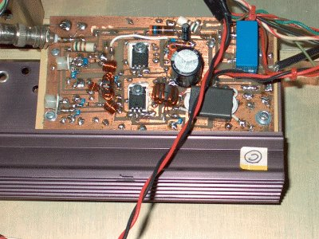
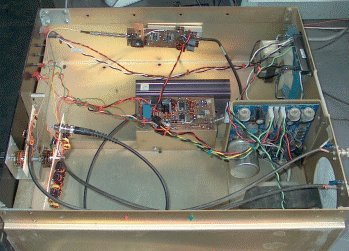
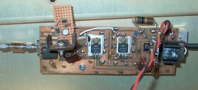
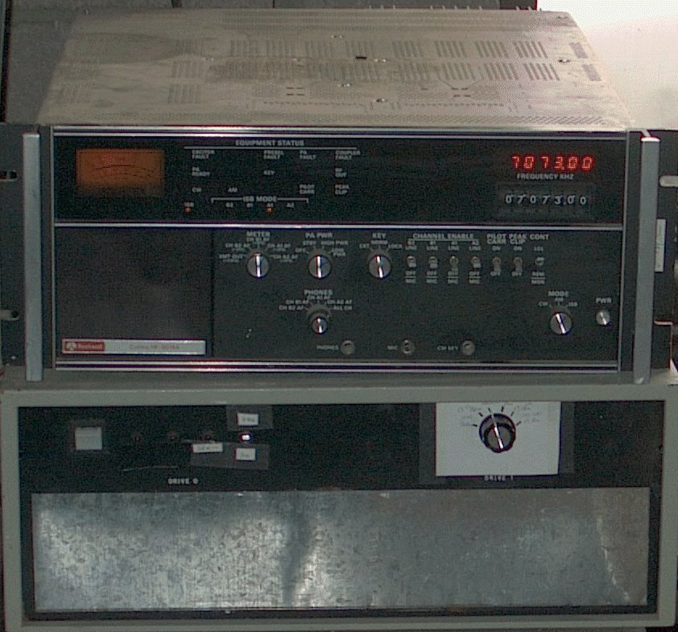
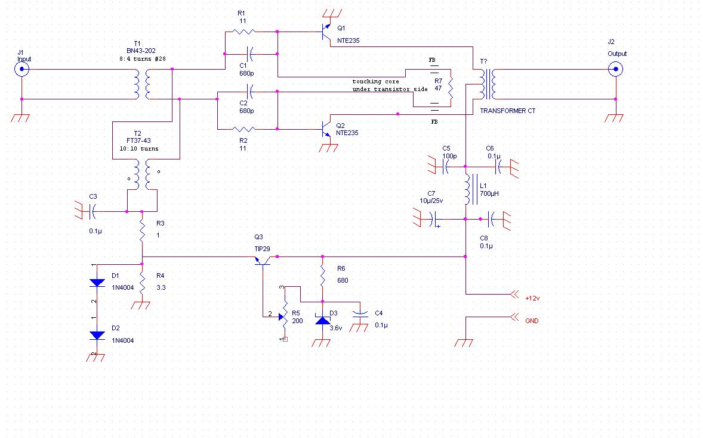
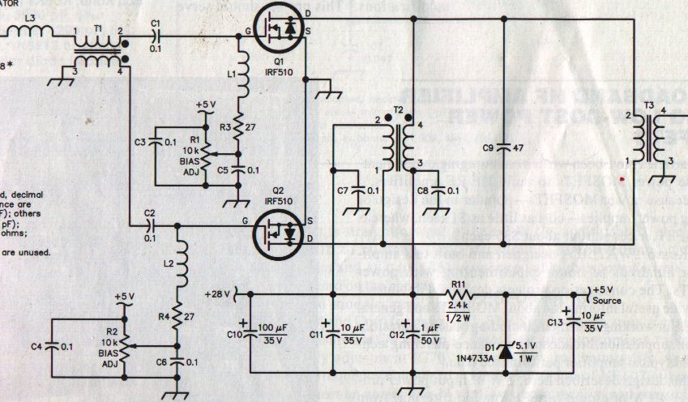
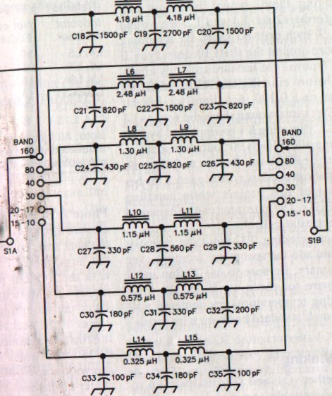

50 W HF Power Amplifier
(Year 2000)The HF power amplifier amplifies a 100 mW input ranging from1.7 MHz to 30 MHz to either 3 W or 50 W switch selectable. It was constructed in a salvage dual 8" disk drive enclosure, and uses its linear power supply for 28 v and 12 v sources. The amplifiers were constructed on double sided copper clad circuit board material on hand, material is not critical. All layout for these amplifiers was done by hand with a Sharpie laundry marker and ruler directly on the PC board. The ground plane side (on the back) was not etched at all. After etching, holes were cut out to fit the transistors using a small rotary grinder. Dozens of holes are drilled to connect the ground plane to the grounded traces on the top of the circuit, these have small wires inserted and soldered on both sides. The higher power amplifier section is derived from the project in the 2000 A.R.R.L. handbook entitled "A Broadband HF Power Amplifier Using Low-Cost Power MOSFETS", by WA2EBY. Below are the photos and schematics. The low power amplifier is an original design of the author- AD5MQ. Not shown in the schematics are the dc power relay, and bypass relay for the high power amplifier, or the various attenuators (1 per band) used to compensate the exciter power output for approximately constant output power on each band. These range from 1 dB to about 14 dB and depend on the specific exciter used. It is very helpful to have a scope when selecting these, although a (low) power meter may be used. The output of the low power amplifier should be limited to about 2.5 W measured if a scope is not available, in order to avoid clipping at the lower frequencies. A BN43-3312 core is suitable for the output transformer of both the low and high power amplifiers. FT50-43 cores are used for drain bias, and smaller FT37-43 cores are used for the input transformer. These are also used for the collector bias of the low power amplifier (as built), and the base bias. This reduces the total number of core types required for the active amplifiers.
 
The High power amplifier Assembled amplifier
 
The Low Power Amplifier Amplifier with Harris RF 8014 exciter

AD5MQ Low power amplifier

WA2EBY High Power Amplifier

H.F.P.A. Output filters